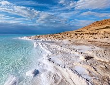
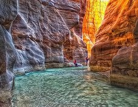
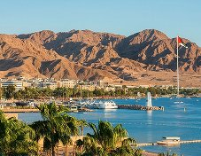
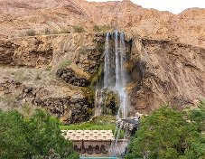

Seas & Valleys
Jordan’s Hidden Places
Most Famous Spots

The Dead Sea
The lowest point on Earth, famous for effortless floating and mineral-rich mud.
Float & Mud Spa Day
Float easily on the salty water, cover yourself in natural mud, and watch the sunset over the hills of the West Bank.
- Location: Dead Sea shore, about 50 minutes from Amman.
- Price: Public beaches from about 20 JOD per person.
- Activities: Floating, mud treatment, and sunset views.
- Services: Resorts, spas, showers, and restaurants.

Wadi Mujib
A spectacular river canyon famous for water-trekking, hiking, and waterfalls.
The Siq Water Trail
Walk and swim through a narrow canyon, climb small waterfalls with ropes, and finish at a big waterfall at the end of the trail.
- Location: Mujib Biosphere Reserve, Dead Sea road.
- Price: About 21 JOD per person (Siq Trail).
- Activities: Water trekking, canyoning, and swimming.
- Services: Visitor center, life jackets, lockers, and chalets. Open April to October.

Aqaba (Red Sea)
Jordan's coastal hub, popular for beaches, swimming, and coral reef diving.
Snorkeling & Glass Boat Tours
Discover colorful coral reefs and fish in the Red Sea, relax on sunny beaches, and enjoy fresh seafood by the water.
- Location: Aqaba, south of Jordan on the Red Sea.
- Price: Public beaches are free, boat trips from about 10 JOD.
- Activities: Snorkeling, diving, glass-bottom boats, and swimming.
- Services: Hotels, dive centers, and seafood restaurants.

Ma'in Hot Springs
A natural desert oasis featuring warm, mineral-rich thermal waterfalls.
Thermal Waterfalls & Pools
Relax under warm natural waterfalls and soak in mineral pools surrounded by desert mountains.
- Location: Ma'in, about 30 minutes from Madaba.
- Price: Day pass from about 25 JOD per person.
- Activities: Bathing in hot pools and relaxing under the waterfalls.
- Services: Resort spa, restaurant, and changing rooms.